General Design Process
Initial Lens Selection
Prior to starting optical simulations in Zemax, it’s convenient to start with straightforward calculations to determine which lenses to use in the optical train to achieve the desired field of view (FoV) for your detection path. In our case, our detection path consisted of a 400 mm tube lens and a Nikon 25x/1.1 numerical aperture (NA) immersion detection objective.
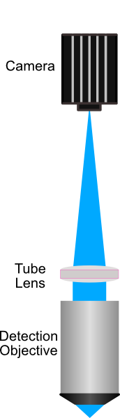To determine the target FoV, start with determining the final magnification (M) of the system using the ratio of the focal lengths of the tube lens (fTL) and the detection objective (fDO):
M = fTL/fDO
From there, determine the resulting FoV of the detection path by dividing the total camera sensor size (in mm) by the magnification, and then converting into microns:
FoV (in microns) = (W Sensor /M)*1000
For our system, where fTL = 400 mm, fDO = 8 mm, and W Sensor = 13 mm, this resulted in a FoV of ~266 \(\mu m\), meaning that we want to select lenses in our illumination path to produce a light sheet as close to 266 \(\mu m\) in length as we can achieve.
The overarching goal of a standard optical system is to both mold light into a particular shape and direct it to a particular location. In our case, our optical system works to convert an input gaussian beam into a thin light sheet that illuminates our sample. There are a few sets of criteria that help guide our potential lens selection:
As mentioned, we want our final light sheet size to ideally cover the full FoV of our detection path (~266 μm)
At the focus of our cylindrical lens, we want the beam spot size to stay under the size of our resonant galvo (12 mm diameter)
We need the focal distance between the cylindrical lens and the galvo mirror system to be greater than ~55 mm due to mechanical considerations of the mirror mount used
We want to overfill our objective, (Reasoning behind overfilling objective) , resulting in a thinner light sheet width
With these criteria in mind, we can calculate a theoretic estimate of what our beam size is after each of our lenses. We do this by considering every pair of lenses (i.e. Lens 1 & 2, Lens 2 & 3, …) as a sort of 4F magnification system, where the resulting image size of the pairs is determined by the ratio of their focal lengths (fn) as follows:
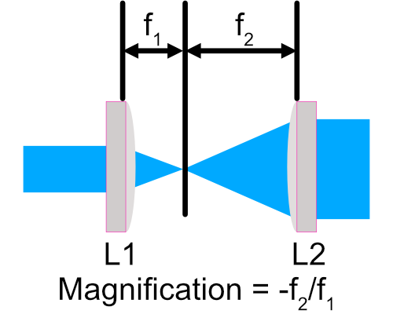Essentially, we can cascade these calculations through our lenses and make sure that our choices in their focal lengths produce our desired beam characteristics as light propagates through the system. In our case, our chosen system featured 4 lenses from Thorlabs: L1 = 30 mm, L2 = 80 mm, L3 (Cylindrical) = 75 mm, and L4 = 250 mm.
We can then take these lens choices and load them into Zemax Opticstudio to verify the characterisitcs of our system.
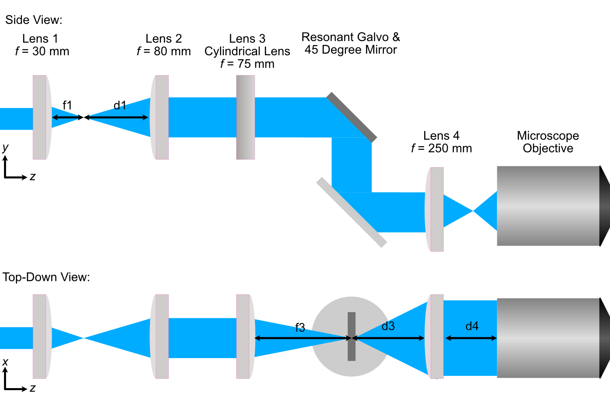Zemax Simulation Setup Process
With our chosen lens in mind, we can download Zemax files associated with each lens directly from Thorlabs website and set up our simulation.
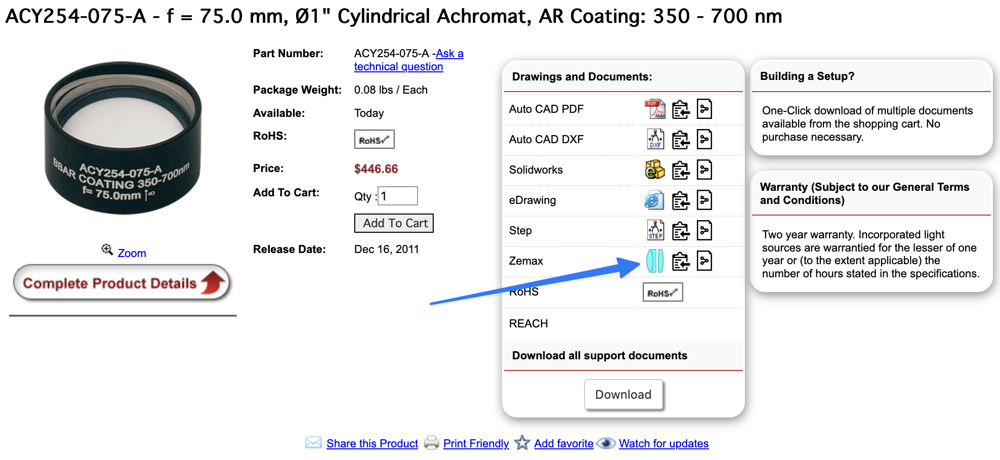Here, we use Zemax as a tool to find the optimal placement of all the lenses of our system based on whether or not the input beam should be focusing or collimated after each lens. As a general rule of thumb, one should build optical systems in Zemax in an element-by-element manner instead of adding all the optical elements and trying to then optimize aspects of it. Our general flow involves adding a lens to the system and then optimizing for either either a focused or collimated beam, and then adding in the next lens and doing the same process until all lenses are placed in the system. This is described in more detail below.
For our particular system, our generalized process went as follows:
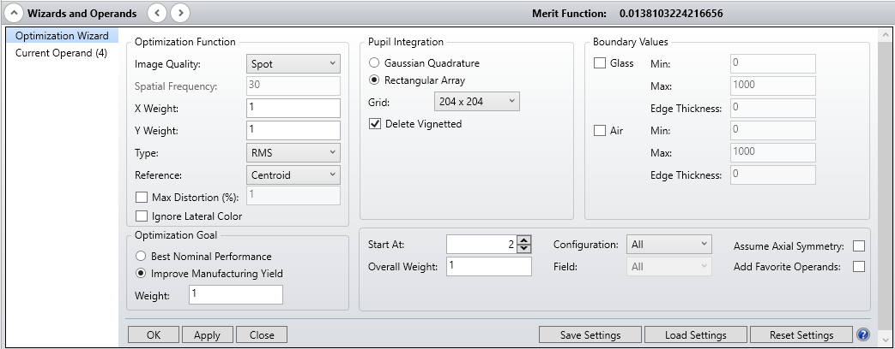
Create a new file that will be used as our lens assembly file
Set aperture size in Zemax to match our laser spot size (2.4 mm).
Open the Zemax file associated with Lens 1, then copy and paste the surfaces into our assembly file.
Use the optimzation wizard to set a focusing optimization with the distance after L1 (f1) as the variable to find the correct position of L1’s focus.
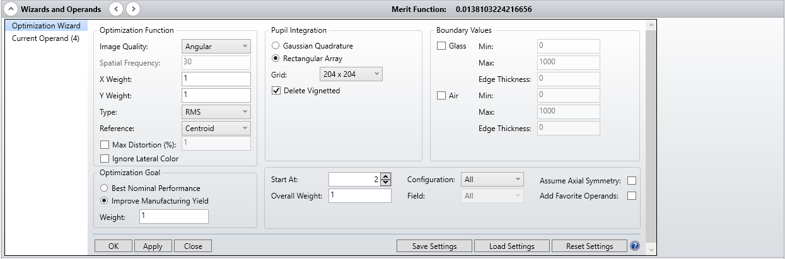
Run the optimization, then remove the variable for f1.
Open the Zemax file associated with Lens 2, then copy and paste the surfaces into our assembly after Lens 1
Use the Optimization Wizard to set an angular (collimation) optimization, with the distance between L1’s focus and L2 (d1) as the variable.
Optimize, then remove the variable for d1.
Open the Zemax file associated with Lens 3, then copy and paste the surfaces into our assembly after Lens 2.
Use the optimization wizard to set an X-focusing optimization with the distance after L3 (f3) as the variable.
Optimize, then remove the variable for f3.
Place in resonant galvo and 45 degree mirror surfaces at the location of f3.
Open the Zemax file associated with Lens 4, then copy and paste the surfaces into our assembly after the 45 degree mirror.
Use the optimization wizard to set an X-collimation optimization with the distance between the 45 degree mirror and L4 (d3) as the variable.
Optimize, then remove the variable for d3.
Open the Zemax file associated with our Illumination Objective, then copy and paste the surfaces into our assembly after L4.
Use the Optimization Wizard to set an X-focusing Optimization with the distance between L4 and the objective (d4) as the variable.
Optimize
Zemax Simulation Analysis
Within Zemax, there are numerous analysis tools available to investigate different characteristics of optical systems. Our analysis will primarily be guided by the Geometric Image Analysis, Huygen’s PSF, and Through Focus Spot tools. Zemax innately uses geometric ray tracing in most all of its operations like beam optimization. This is generally-acceptable for most optical systems; however, as our output light sheet size approaches the diffraction limit ( \(\frac{\lambda}{2NA}\) ), we need to make sure to also consider the effects of diffraction in our analysis.
The Huygen’s PSF analysis tool is how we incorporate effects of diffraction into our analysis; where we anticipate results from this analysis to be more in-line with what would be seen on the physical system. Based on the cross section of our Huygen’s PSF analysis, we can see that our expected Full-Width Half-Max (FWHM) of the light sheet is expected to lie somewhere around 0.376 \(\mu m\).
We compare the results of these two analyses for our optimized illumination path below, where we show the full XY profile as well as cross-sections through the center row of both beam profiles. In this case, the FWHM of both analyses ends up being quite similar at ~0.37 \(\mu m\).
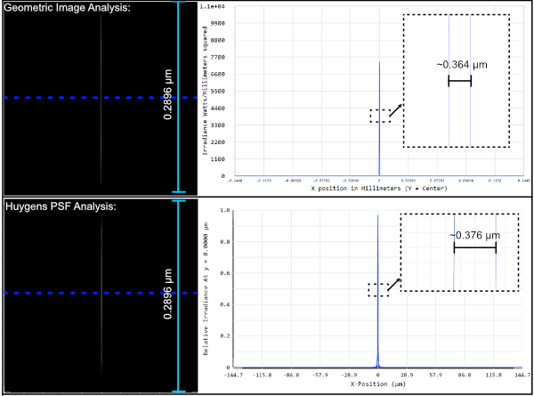Through Focus Spot analysis allows us to essentially see the evolution of the light sheet through the point of focus, where we can then estimate a sort of range where we expect the width of the light sheet to be thin enough for our imaging purposes, where the maximum usable light sheet width is the FWHM at the focus multiplied by \(\sqrt{2}\).
Zemax Tolerancing Analysis
When considering building physical systems using Zemax, an additional analysis tool known as tolerancing becomes increasingly important. No physical system is perfect, and tolerancing is essentially the process of understanding how sensitive different elements in a system are to various perturbations. This can be along the lines of how sensitive the collimation or magnification of a 4F system is to small physical displacements of the two lenses that comprise it. Similarly to Zemax’s optimization process, tolerancing also utilizes a merit function. This merit function is fully customizable, and serves to define how well a particular system is performing. In the case of our system, we chose our merit function to factor in both the size and displacement of the output light sheet relative to the perfectly optimized instance. Our merit function used in Zemax is also shown below, where there are 4 operands that track the size and position of the beam in both x and y.
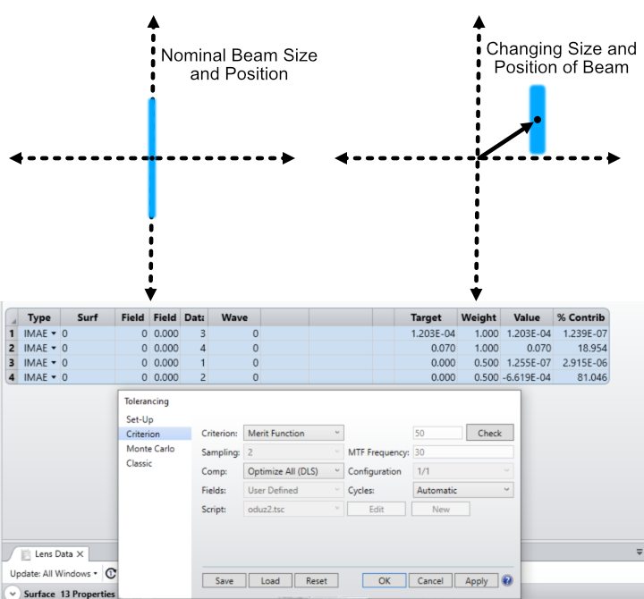With a merit function criteria set, the next step is to designate which elements of the system will change and by how much. In our case, we wanted to associate our tolerance analysis with the machining tolerances given by fabrication companies. In general, looking across different companies, the standard machining tolerance is around +-0.005” and the finer machining tolerance is around +-0.002”. For our analysis, we wanted to understand how angular deviations in elements due to machining tolerances in the alignment dowel pins would affect overall system performance. This is depicted below, where in the worst case scenario of one pin being offset +0.005” and the other -0.005” the resulting angular offset would be around 1.45 degrees.
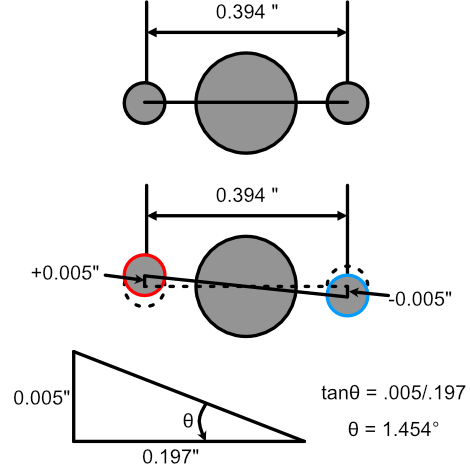In addition to perturbations to a system, in tolerancing analysis a compensator can also be defined as a sort of designated element that can be changed in ways to try to mitigate effects of other elements in the system being tweaked. In our case, we define the xy position of our illumination objective as a compensator with a range of +-0.25mm, which matches the xy translation adjustment associated with our objective mount used.
The basic way in which this analysis works is that Zemax performs a designated number of Monte Carlo simulations, each with a different perturbation made to the system, and evaluates the merit function for each of those systems. Based on the change to the merit function for each of these instances, tolerancing outputs a report that describes the sensitivity of the merit function to each of the different elements in the system. In some cases, tolerancing analysis gives information as to how much . An example of this is for a lens designer tolerancing the radii or material properties of a lens to ensure it’s focal length stays above or below a certain value. For our system though, even with our designated merit function, it is difficult to directly ascribe a sort of cutoff value of the merit function as acceptable, and so we primarily use tolerancing analysis as a way to guide us as to general trends of sensitivity in the elements of our system.
This is shown below, where in this instance we can see that in the case of our system, the element corresponding to the 24th surface (the galvo mirror) causes the most change to the merit function as it becomes perturbed. In all cases, the largest perturbations in the system (i.e. when the angular offset of an element is maximum at +-1.45 degrees) results in the largest changes to the merit function.
We also set our tolerance analysis to output the best and worst instances from the Monte Carlo simulations as individual files, and the corresponding geometric image analysis windows are shown for each as well as the nominal optimized case for comparison. It’s clear that in the worst case scenario, it looks like the resulting light sheet is shorter in span than that of the nominal and best cases.
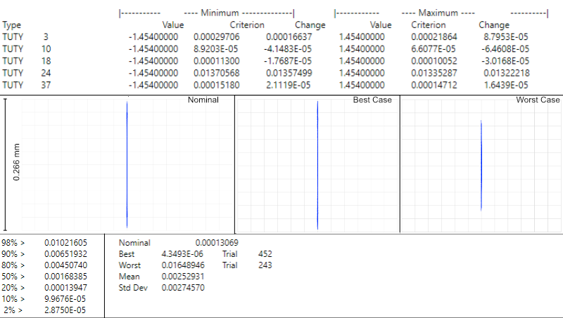To understand how tighter tolerances might affect system performance, we set our angular offset to correspond to tighter machining tolerances offered online at +-0.002”. Typically, tighter machining tolerances correspond to an increase in price, so understanding if higher tolerances would benefit a system is beneficial. We can the same tolerance analysis as before, but this time with an angular offset of +-0.581 degrees, and show the results below. In this analysis, once again the element that affects the system most adversely is the galvo mirror element. The deviations in the resulting merit functions from this element are about a tenth of that of the larger machining tolerance case. Visually, in the worst case example, one can see that the resulting light sheet looks much closer to the nominal case than before as well.
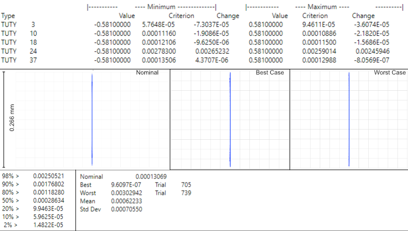Baseplate Design
When satisfied with the results of simulations, the optimized values in Zemax can then be used to design our baseplate. This process involves taking the optimized distances between our various optical elements and then considering how each of those elements are mounted in a physical system, as in Zemax all of the elements are effectively suspended in midair like below:
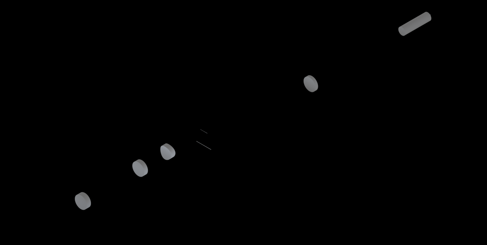For mounting our elements, we utilize the Polaris line from Thorlabs, which are designed with long-term stability and alignment in mind. Each component is characterized in part by two dowell pin alignment holes to ensure subsequent mounted elements are aligned along a specific axis. In the baseplate design, we are essentially deciding on the location for the mounting holes of the Polaris posts we’re using, which is not the same as the locations of the elements themselves from Zemax.
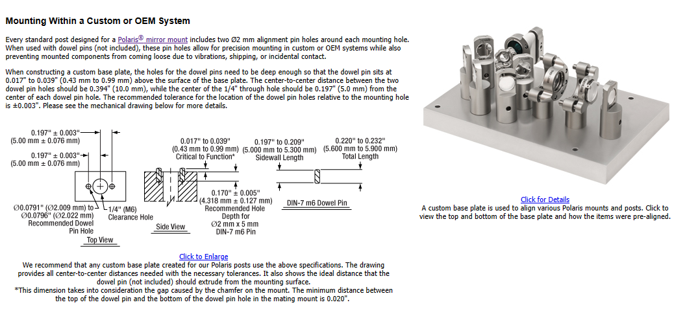While we are able to use most of our element mounts from the Polaris line, for the cylindrical lens L3 we needed a mount capable of rotating the lens, which at this time is not something available from Thorlabs. In our case we designed an additional mounting element that allows the use of a basic Thorlabs RSP1 rotation mount, but still ensures alignment with the other Polaris elements. The CAD file for this mount is available for download here (INSERT DOWNLOAD LINK FOR ELEMENT?)
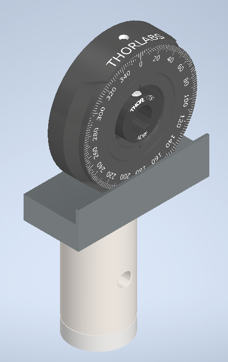With the method in which each of the elements needs to be mounted decided upon, we then went over the product schematics for each mount to understand the z-displacement that they impart upon the element mounted within them relative to where the Polaris post central mounting hole would need to be. This idea is depicted below, where when considering how to space two lenses from each other there is essentially three components to take into account:
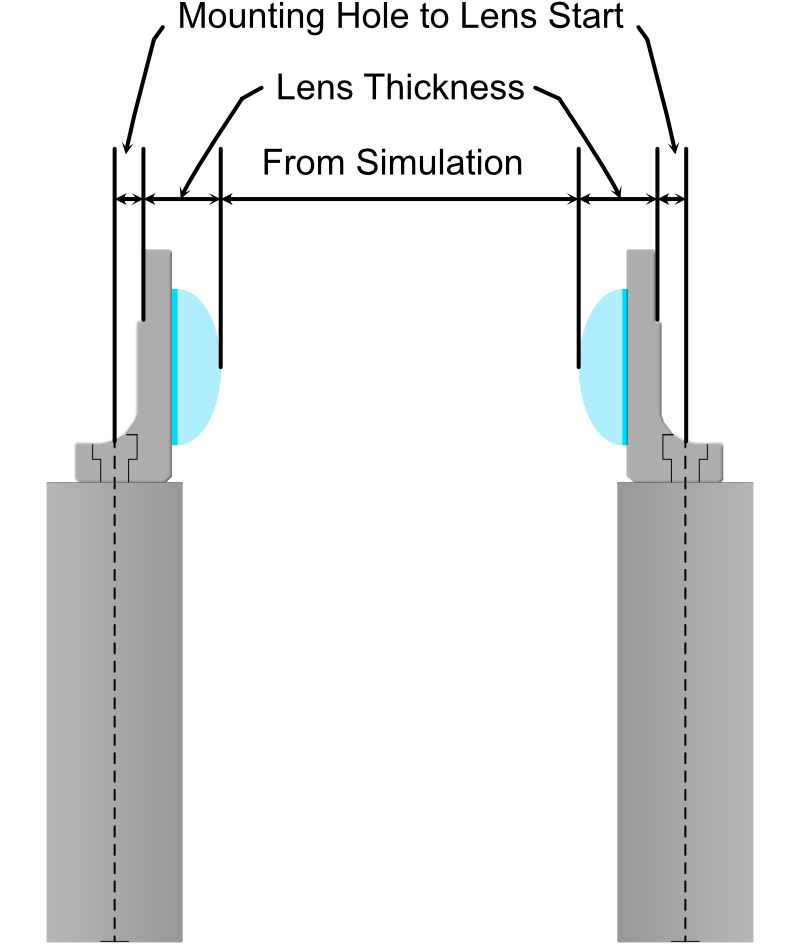
The distance between the lenses decided from simulation
The thickness of the lenses themselves
The distance between the center of the Polaris post and the start of the lens in the mount
Once the locations of the mounting holes were determined, we used Autodesk Inventor to design the full baseplate. The baseplate is essentially just a mounting hole and the two dowel pin holes for every element, as well as four mounting holes for the baseplate itself. These four baseplate mounting holes were spaced in increments of inches such that the baseplate can either be screwed directly into an optical breadboard table or into additional posts that can keep the assembly at a desired height.
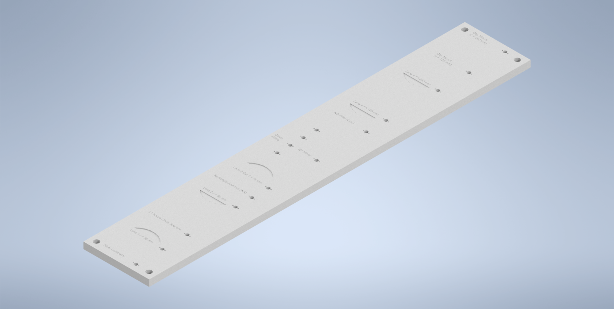With the baseplate designed, our final assembly for our illumination path looks as follows:
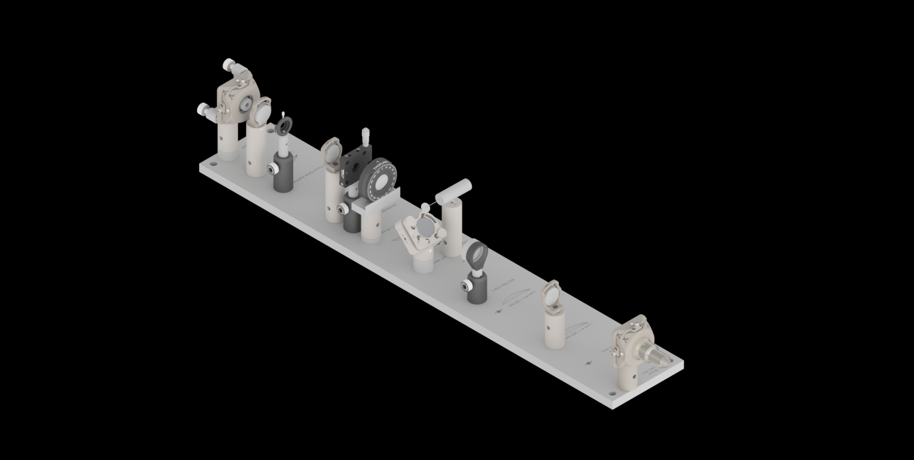 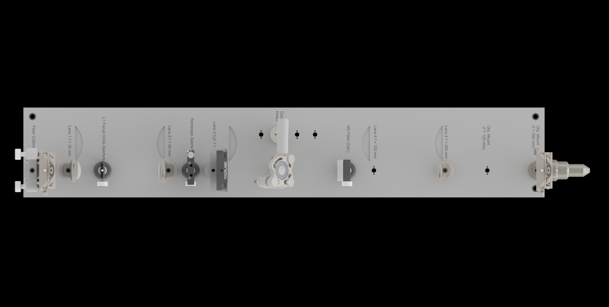Note on Difference in Simulated and Physical Coordinate Definitions
It should be noted briefly that when discussing our physical microscope systems using Navigate software, the definitions for the coordinate axes is different than that of our simulations. This is due to a difference in standardized definitions for the axes in our previous systems and how Zemax defines these same axes. This difference is depicted in the picture below:

Physical Assembly Process
Our baseplate design was made with ease of assembly in mind. The basic process involves aligning Polaris posts with dowell pins and screwing them using 1/4”-20 Screws in at the predetermined hole locations on the breadboard. This general process is depicted below:

We used various different Polaris post sizes in our assembly based on what element was being mounted on them. Also worth noting is that three elements are designed to be placed on 0.5” posts and as such require 0.5” post holders at their designated locations: the L1 focus iris, the rectangular aperture after L2, and the ND filter after the 45 degree mirror. The overal breakdown of which size posts went with each hole location is listed below:

To either mount the baseplate onto an optical table or onto separate posts, the process is similar in that just requires screwing 1/4”-20 screws into either an optical breadboard or onto separate posts at the four corner holes.
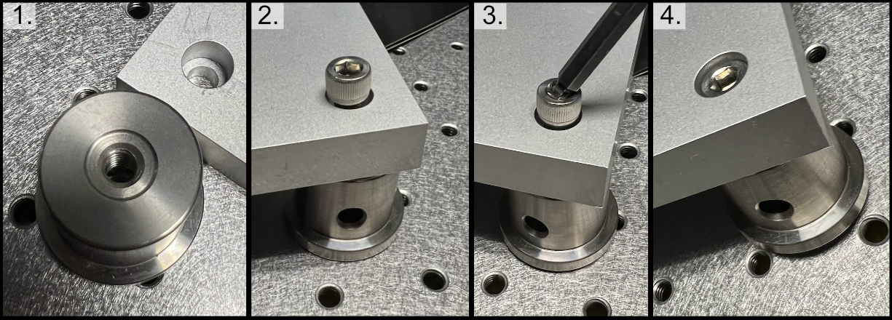Finding the Focus
Minimizing Spherical Aberrations
Once the system has been assembled to the point of being able to take image stacks, the process of minimizing the effects of spherical aberrations can begin. Spherical aberrations are typically introduced into optical systems due to the surface curvature of different lens elements. This type of aberration typically presents itself visually as a sort of stretching or bending of the focus of light in the system. Certain microscope objectives, such as the Nikon 25x/1.1 NA that we employ in this setup, have a built-in collar that can be adjusted to minimize spherical aberration (PICTURE).
In our system, we expect the effects of spherical aberrations to be along the axis of our detection path (defined as z in our imaging scheme). In order to visualize these effects and adjust the correction collar of our objective to mitigate them, we employ a process of taking a z-stack of fluorescent beads suspended in agarose and using ImageJ to quickly process those images.
Take a z-stack within Navigate of your sample
Open up the z-stack within ImageJ
Reslice the z-stack (Image -> Stacks -> Reslice)
Do a maximum intensity project of the resliced stack (Image -> Stacks -> Z-Projection)
Take note if spherical aberration is present in the projected image.
If spherical aberration is still present, make slight adjustments to the objective correction collar and repeat Steps 1-5.
As a note, observing the camera live-feed via Navigate’s “Continuous Scan” mode while adjusting the correction collar can help to get in the general vicinity of the correct placement of the correction collar. An example of how change in the correction collar affect live images are shown below for fluorescent beads. Aiming to get to get the beads near the expected light sheet position to be as in-focus as possible is a general guide for what direction to move the collar; however, true correction needs to be done with the z-projection method mentioned above.
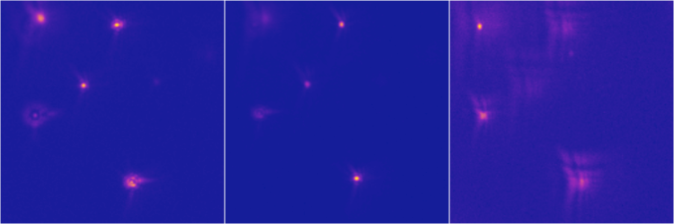As a quick example of what an image of a z-projection could look like before and after trying to correct for spherical aberration is shown below. Here, one can see in the top panel that the bead features are essentially smoothed out and fuzzy due to aberrations, while in the bottom panel with adjustments made to the correction collar the beads appear much cleaner and focused.
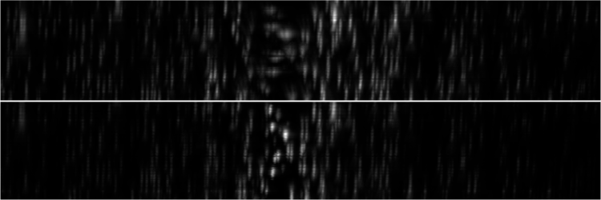Piezo Setup & Troubleshooting
On the PCI Board, connect the positive and negative wires to the corresponding analog output (AO) you want, in our case we used AO 0, so we connected the positive wire to pin 10 and the ground to pin 11, then plug the BNC cable connected to those wires into the EXT IN input on the Tiger controller panel corresponding to the piezo.
Plug the piezo cable into the PIEZO input on the Tiger controller panel corresponding to the piezo.
Verify the range of the piezo in the tiger controller software with the command “5 cca x?”
- At first, ours output the following:
This tells us that our Piezo (Panel 5/Q) corresponded to P1 or a 100 um range, but our piezo needed to have a 50 um range instead. To change this, we used the command “5 cca x = 34” and power cycled the controller.
- Then our output became:
Now we can see that the piezo is set to the correct range (Pf). With that verified, now confirm that the voltage output from the PCI Board is working:
Put the BNC cable input currently in EXT IN on the Tiger control panel into the input of the oscilloscope instead.
Go to the test panels for the PCI board in NI MAX.
Set the voltage mode to sinewave generation.
Set the voltage range to be between 0 to 10 V.
Set the frequency to a desired value (we ended up setting it pretty high at 10000 Hz for ease of viewing on the oscilloscope).
With the voltage output of the PCI board verified, plug the PCI Board voltage cable output back into the EXT IN slot and verify that the position output of the Piezo reads similarly on the oscilloscope:
Plug a BNC Cable into the SENSOR OUT connection on the tiger controller panel.
Plug the other end of that cable into the oscilloscope.
Verify that a sinewave output is seen on the oscilloscope.
If the PCI Board voltage is working as intended but the piezo position output doesn’t seem to work, try ensuring that the piezo is set in External Input mode, and not Controller Input mode:
- Use the PM Q? (Our piezo corresponds to Q) command:
the output was “Q = 0” originally, telling us that it’s in Controller Input mode
- Use the “PM Q = 1” command to set the piezo into External Input mode:
now the output of “PM Q?” is “Q = 1”